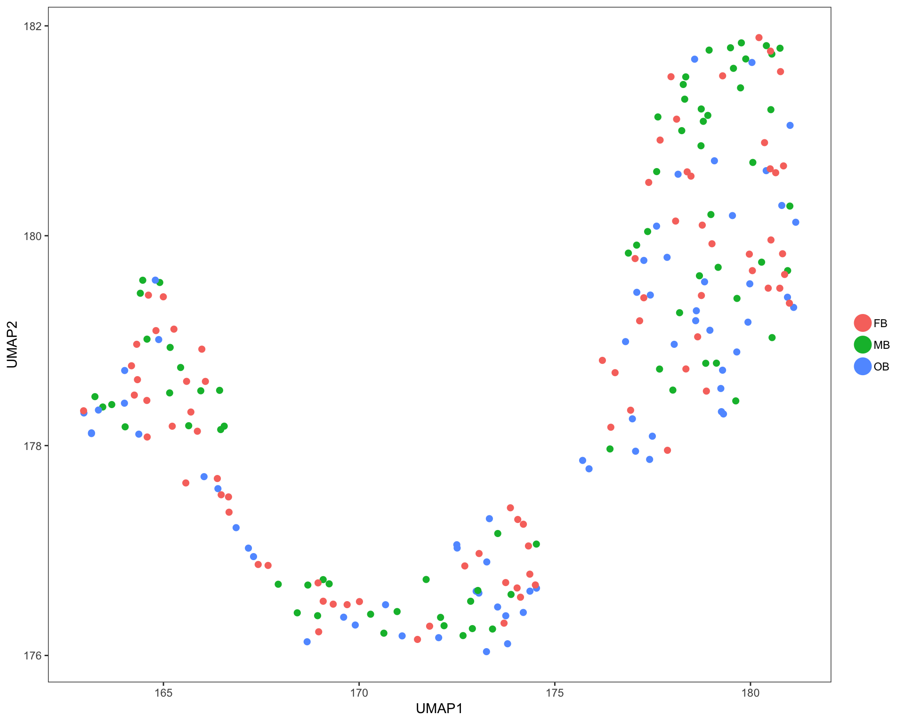

DimensionReduction_Clustering
Yasin Kaymaz
1/30/2019
Last updated: 2019-04-18
Checks: 6 0
Knit directory: Harvard-RosenbrockLab/
This reproducible R Markdown analysis was created with workflowr (version 1.2.0). The Report tab describes the reproducibility checks that were applied when the results were created. The Past versions tab lists the development history.
Great! Since the R Markdown file has been committed to the Git repository, you know the exact version of the code that produced these results.
Great job! The global environment was empty. Objects defined in the global environment can affect the analysis in your R Markdown file in unknown ways. For reproduciblity it’s best to always run the code in an empty environment.
The command set.seed(20190304) was run prior to running the code in the R Markdown file. Setting a seed ensures that any results that rely on randomness, e.g. subsampling or permutations, are reproducible.
Great job! Recording the operating system, R version, and package versions is critical for reproducibility.
Nice! There were no cached chunks for this analysis, so you can be confident that you successfully produced the results during this run.
Great! You are using Git for version control. Tracking code development and connecting the code version to the results is critical for reproducibility. The version displayed above was the version of the Git repository at the time these results were generated.
Note that you need to be careful to ensure that all relevant files for the analysis have been committed to Git prior to generating the results (you can use wflow_publish or wflow_git_commit). workflowr only checks the R Markdown file, but you know if there are other scripts or data files that it depends on. Below is the status of the Git repository when the results were generated:
Ignored files:
Ignored: .DS_Store
Ignored: .Rhistory
Ignored: .Rproj.user/
Ignored: analysis/.DS_Store
Ignored: output/.DS_Store
Untracked files:
Untracked: code/Gupta_data_process.R
Untracked: code/Hook_cellAnnotation_w-KI_rc.R
Untracked: code/Rsem-Gene-counts.R
Untracked: code/Rsem-Isoform-counts.R
Untracked: code/guptaAnalysis.Rmd
Untracked: docs/figure/Flip-Flop-Isoforms.Rmd/
Untracked: output/FlipFlop-gene-isoforms.pdf
Untracked: output/Heatmap-Percent-isoforms.pdf
Untracked: output/Hook.predictions..prediction-crosscheck.pdf
Untracked: output/Hook2018gene.plots.pdf
Untracked: output/Hook2018gene.rfcv.predictions.w-singleZeisel-rank3.mode.-stats.pdf
Untracked: output/Hook2018gene.rfcv.predictions.w-singleZeisel-rank3.prediction-crosscheck.pdf
Untracked: output/Hook2018gene.rfcv.predictions.w-singleZeisel-rank3.prediction-probability-projection.pdf
Untracked: output/Hook2018gene.rfcv.predictions.w-singleZeisel-rank3.prediction-quality.pdf
Untracked: output/Hook2018gene.rfcv.predictions.w-singleZeisel-rank3.prediction-stats.pdf
Untracked: output/Hook2018gene.rfcv.predictions.w-singleZeisel-rank4.mode.-stats.pdf
Untracked: output/Hook2018gene.rfcv.predictions.w-singleZeisel-rank4.prediction-crosscheck.pdf
Untracked: output/Hook2018gene.rfcv.predictions.w-singleZeisel-rank4.prediction-probability-projection.pdf
Untracked: output/Hook2018gene.rfcv.predictions.w-singleZeisel-rank4.prediction-quality.pdf
Untracked: output/Hook2018gene.rfcv.predictions.w-singleZeisel-rank4.prediction-stats.pdf
Untracked: output/Hook2018iso.plots.pdf
Unstaged changes:
Modified: analysis/_site.yml
Modified: code/WP_codes.R
Modified: output/Gpr83.Isoplots.pdf
Modified: output/Gria1.Isoplots.pdf
Modified: output/Gria4.Isoplots.pdf
Modified: output/Grm4.Isoplots.pdf
Modified: output/Rplots.pdf
Note that any generated files, e.g. HTML, png, CSS, etc., are not included in this status report because it is ok for generated content to have uncommitted changes.
These are the previous versions of the R Markdown and HTML files. If you’ve configured a remote Git repository (see ?wflow_git_remote), click on the hyperlinks in the table below to view them.
| File | Version | Author | Date | Message |
|---|---|---|---|---|
| Rmd | 2bd3ebb | Yasin Kaymaz | 2019-04-18 | flip-flops commit |
| html | 4277c88 | Yasin Kaymaz | 2019-03-15 | Build site. |
| Rmd | b85db50 | Yasin Kaymaz | 2019-03-15 | isoform results |
| html | de005bf | Yasin Kaymaz | 2019-03-15 | Build site. |
| html | abeab71 | Yasin Kaymaz | 2019-03-15 | Build site. |
| Rmd | ae57569 | Yasin Kaymaz | 2019-03-15 | isoform results |
| html | 1abd5c7 | Yasin Kaymaz | 2019-03-15 | Build site. |
| Rmd | dbac3ec | Yasin Kaymaz | 2019-03-15 | isoform results |
| html | 49c0cce | Yasin Kaymaz | 2019-03-06 | Build site. |
| html | 3d2c5f6 | Yasin Kaymaz | 2019-03-06 | Build site. |
| html | f4d0605 | Yasin Kaymaz | 2019-03-05 | Build site. |
| Rmd | 6ead7d0 | Yasin Kaymaz | 2019-03-05 | violin plots |
| html | ced17ea | Yasin Kaymaz | 2019-03-05 | Build site. |
| Rmd | 066a7e8 | Yasin Kaymaz | 2019-03-05 | violin plots |
| html | c534f45 | Yasin Kaymaz | 2019-03-04 | Build site. |
| html | a1bf7ee | Yasin Kaymaz | 2019-03-04 | Build site. |
| Rmd | 1be7385 | Yasin Kaymaz | 2019-03-04 | initial commit |
Clustering analysis of all cells in the Hook 2018 study
In each of these plots, colored dots represent individual cells. Analysis was done using only highly variable genes. Cell annotation are projected from original publication.
Three brain regions cells are taken from:
midbrain, MB; forebrain, FB; olfactory bulb, OB;
In the analysis, I excluded E15.5 cells as requested by CNSDR and done the rest of analysis with only P7 mice cells.
PCA plots

UMAP plots
Cells are colored by mouse brain region, and cell subsets, respectively.

| Version | Author | Date |
|---|---|---|
| abeab71 | Yasin Kaymaz | 2019-03-15 |
.
.
.
.
.
sessionInfo()R version 3.5.0 (2018-04-23)
Platform: x86_64-apple-darwin17.5.0 (64-bit)
Running under: macOS 10.14.4
Matrix products: default
BLAS: /System/Library/Frameworks/Accelerate.framework/Versions/A/Frameworks/vecLib.framework/Versions/A/libBLAS.dylib
LAPACK: /System/Library/Frameworks/Accelerate.framework/Versions/A/Frameworks/vecLib.framework/Versions/A/libLAPACK.dylib
locale:
[1] en_US.UTF-8/en_US.UTF-8/en_US.UTF-8/C/en_US.UTF-8/en_US.UTF-8
attached base packages:
[1] stats graphics grDevices utils datasets methods base
other attached packages:
[1] forcats_0.4.0 stringr_1.4.0 purrr_0.3.2 readr_1.3.1
[5] tidyr_0.8.3 tibble_2.0.1 tidyverse_1.2.1 dplyr_0.8.0.1
[9] Seurat_2.3.4 Matrix_1.2-14 cowplot_0.9.4 here_0.1
[13] DT_0.5 plotly_4.8.0 ggplot2_3.1.0
loaded via a namespace (and not attached):
[1] readxl_1.3.1 snow_0.4-3 backports_1.1.4
[4] Hmisc_4.2-0 workflowr_1.2.0 plyr_1.8.4
[7] igraph_1.2.4 lazyeval_0.2.1 splines_3.5.0
[10] digest_0.6.18 foreach_1.4.4 htmltools_0.3.6
[13] lars_1.2 gdata_2.18.0 magrittr_1.5
[16] checkmate_1.9.1 cluster_2.0.7-1 mixtools_1.1.0
[19] ROCR_1.0-7 modelr_0.1.4 R.utils_2.8.0
[22] colorspace_1.4-0 rvest_0.3.2 haven_2.1.0
[25] crayon_1.3.4 jsonlite_1.6 survival_2.42-6
[28] zoo_1.8-4 iterators_1.0.10 ape_5.2
[31] glue_1.3.1 gtable_0.2.0 kernlab_0.9-27
[34] prabclus_2.2-7 DEoptimR_1.0-8 scales_1.0.0
[37] mvtnorm_1.0-10 bibtex_0.4.2 Rcpp_1.0.1
[40] metap_1.1 dtw_1.20-1 viridisLite_0.3.0
[43] htmlTable_1.13.1 reticulate_1.11.1 foreign_0.8-70
[46] bit_1.1-14 proxy_0.4-23 mclust_5.4.3
[49] SDMTools_1.1-221 Formula_1.2-3 stats4_3.5.0
[52] tsne_0.1-3 htmlwidgets_1.3 httr_1.4.0
[55] gplots_3.0.1.1 RColorBrewer_1.1-2 fpc_2.1-11.1
[58] acepack_1.4.1 modeltools_0.2-22 ica_1.0-2
[61] pkgconfig_2.0.2 R.methodsS3_1.7.1 flexmix_2.3-15
[64] nnet_7.3-12 labeling_0.3 tidyselect_0.2.5
[67] rlang_0.3.4 reshape2_1.4.3 munsell_0.5.0
[70] cellranger_1.1.0 tools_3.5.0 cli_1.1.0
[73] generics_0.0.2 broom_0.5.1 ggridges_0.5.1
[76] evaluate_0.10.1 yaml_2.2.0 npsurv_0.4-0
[79] knitr_1.20 bit64_0.9-7 fs_1.2.7
[82] fitdistrplus_1.0-14 robustbase_0.93-3 caTools_1.17.1.2
[85] RANN_2.6.1 pbapply_1.4-0 nlme_3.1-137
[88] whisker_0.3-2 R.oo_1.22.0 xml2_1.2.0
[91] hdf5r_1.0.1 compiler_3.5.0 rstudioapi_0.10
[94] png_0.1-7 lsei_1.2-0 stringi_1.2.4
[97] lattice_0.20-35 trimcluster_0.1-2.1 pillar_1.3.1
[100] Rdpack_0.10-1 lmtest_0.9-36 data.table_1.12.0
[103] bitops_1.0-6 irlba_2.3.3 gbRd_0.4-11
[106] R6_2.4.0 latticeExtra_0.6-28 KernSmooth_2.23-15
[109] gridExtra_2.3 codetools_0.2-15 MASS_7.3-50
[112] gtools_3.8.1 assertthat_0.2.1 rprojroot_1.3-2
[115] withr_2.1.2 diptest_0.75-7 parallel_3.5.0
[118] doSNOW_1.0.16 hms_0.4.2 grid_3.5.0
[121] rpart_4.1-13 class_7.3-14 rmarkdown_1.10
[124] segmented_0.5-3.0 Rtsne_0.15 git2r_0.25.2
[127] lubridate_1.7.4 base64enc_0.1-3